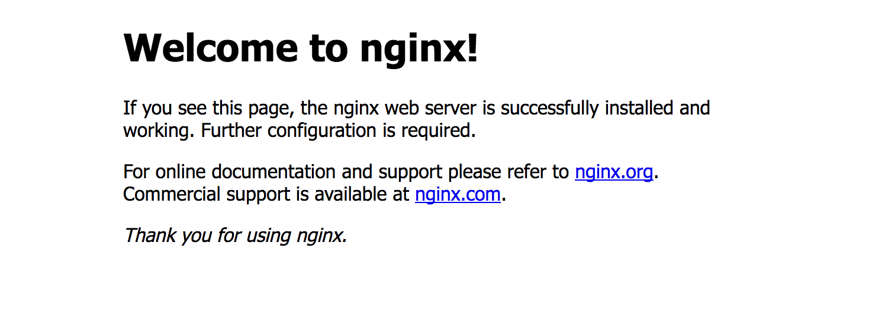
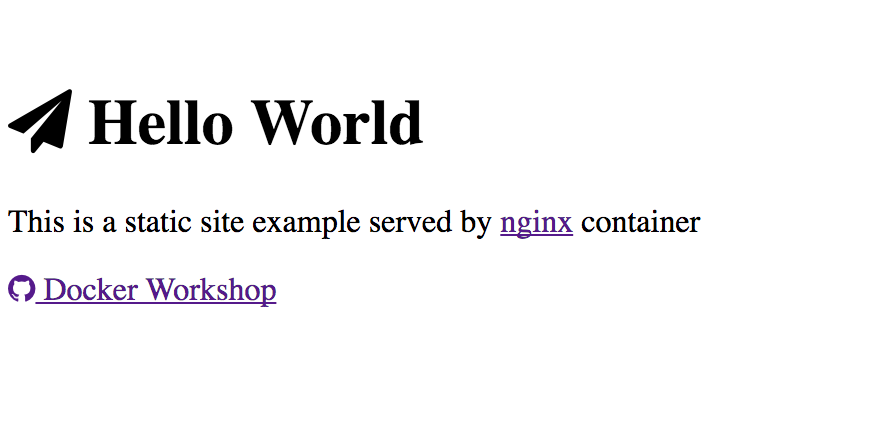

Docker Workshop - Docker Basics
Sections:
Docker Command Line
Version
Check that you have latest version of docker installed with the command:
$ docker version
- If you do not have docker installed, check Docker Installation
- Docker will prompt you to update if you don't have the latest version
- If you're not on docker group you might need to prefix commands with
sudo. - See Root Access for Linux for details about this.
Commands
Check the available docker commands
$ docker
- Type
dockerto see all available docker commands - For more info, type
docker help $DOCKER_COMMAND(e.g.docker help info)
"Hello World" Docker container
docker run alpine echo "Hello World"
$ docker run alpine echo "Hello World" Unable to find image 'alpine:latest' locally latest: Pulling from library/alpine 88286f41530e: Already exists Digest: sha256:1072e499f3f655a032e88542330cf75b02e7bdf673278f701d7ba61629ee3ebe Status: Downloaded newer image for alpine:latest Hello World
Notice that if the docker image doesn't exist that docker will pull the image for you
This docker image merely prints the text Hello World and then exits
Interactive Container
$ docker run -it alpine sh
/ # cat /etc/host
hostname hosts
/ # cat /etc/hostname
6152fd2650a9
Notice that the docker container shell is in the root path /
Docker commandline options for run
-i, --interactiveKeep STDIN open even if not attached-t, --ttyAllocate a pseudo-TTY
Container with a pipeline
$ echo "banana" "apples" "tomatoes" "\n" "burger" | docker run -i alpine wc -l
2
Searching a container
$ docker search -s 5 alpine
Flag --stars has been deprecated, use --filter=stars=3 instead
NAME DESCRIPTION STARS OFFICIAL AUTOMATED
alpine A minimal Docker image based on Alpine Lin... 2353 [OK]
anapsix/alpine-java Oracle Java 8 (and 7) with GLIBC 2.23 over... 219 [OK]
frolvlad/alpine-glibc Alpine Docker image with glibc (~12MB) 86 [OK]
container4armhf/armhf-alpine Automatically built base images of Alpine ... 67 [OK]
davidcaste/alpine-tomcat Apache Tomcat 7/8 using Oracle Java 7/8 wi... 19 [OK]
Docker commandline options for search
-s $DOCKER_AMOUNTDisplays at least $DOCKER_AMOUNT of results
Run container and expose port
Linux:
docker run -d -p 3002:80 nginx
google-chrome localhost:3000
OS X:
docker run -d -p 3002:80 nginx
open "http://$(docker-machine ip default):3000"
*If you run into issues with this command do the following:
Docker commandline options for run
-d, --detachRun container in background and print container ID-p, --publish listPublish a container's port(s) to the host- For more info about the container, see nginx

Docker container with a volume
NOTE: You should cd docker-workshop since we will be using volume mounts in the containers in this repo.
You will need to stop the process running in port 3002 currently
$ docker ps
CONTAINER ID IMAGE COMMAND CREATED STATUS PORTS NAMES
6bd06e442758 nginx "nginx -g 'daemon ..." 43 minutes ago Up 43 minutes 0.0.0.0:3002->80/tcp affectionate_hawking
$ docker stop 6bd06e442758
6bd06e442758
On Linux:
docker run -d -p 3002:80 -v $(pwd)/docker-workshop/hello-world/site/:/usr/share/nginx/html:ro nginx
google-chrome localhost:3002
OS X:
$ docker build -t helloworld
$ docker run -d -p 3002:80 -v $(pwd)/code/hello-world/site/:/usr/share/nginx/html:ro nginx
$ open "http://$(docker-machine ip default):3002"
Stepping into the Running Container
$ docker ps
CONTAINER ID IMAGE COMMAND CREATED STATUS PORTS NAMES
14d304726a06 nginx "nginx -g 'daemon ..." About a minute ago Up About a minute 0.0.0.0:3002->80/tcp keen_heyrovsky
$ docker exec -it 14d304726a06 /bin/sh
# cd /usr/share/nginx/html
# cat index.html
-v, --volume listBind mount a volume (HOST:CONTAINER)- The volume is linked inside the container. Any external changes are visible directly inside the container.
- Remember though that volumes are to be used for data, not code
Exercise
- Build a static website similar to the hello world example
- Run it on your machine
Dockerfile Basics
Building a Git Client Container
Create a Git Container manually:
$ docker run -it --name git alpine sh
# apk --update add git
# git version
# exit
Commit the docker container:
$ docker commit git docker-git
a1a4c66165227d2222070febaf6431402bd0ba8dc4ee69a156072cae9ec5dbe2
$ docker rm git
git
$ docker run --rm -it docker-git git version
git version 2.13.0
$ docker rmi docker-git
Untagged: docker-git:latest
Deleted: sha256:a1a4c66165227d2222070febaf6431402bd0ba8dc4ee69a156072cae9ec5dbe2
Deleted: sha256:6717e3e65ffaf33d3872c24a896542dea9903a52bd9f8b1e7f063fc3ee658fde
docker run --name stringAssign a name to the containerdocker commitCreate a new image from a container's changesdocker rmRemove one or more containersdocker rmiRemove one or more imagesdocker run --rmAutomatically remove the container when it exits
Create a Git Container with Dockerfile:
cd code/docker-git
docker build -t docker-git .
docker run -it docker-git git version
docker buildBuild an image from a Dockerfile
FROM alpine:3.5
RUN apk update
RUN apk add git
- The FROM instruction sets the Base Image for subsequent instructions
- The RUN instruction will execute any commands in a new layer on top of the current image and commit the results
Docker build an Apache Server Container
Create an Apache Server Container with Dockerfile:
cd code/docker-apache2
docker build -t docker-apache2 .
docker run -d -p 3003:80 docker-apache2
Linux:
google-chrome http://localhost:3003
OS X:
open http://localhost:3003
code/docker-apache2/Dockerfile
FROM alpine:3.5
RUN apk --update add apache2 && rm -rf /var/cache/apk/*
RUN mkdir -p /run/apache2
EXPOSE 80
CMD httpd -D FOREGROUND
- The EXPOSE instruction informs Docker that the container listens on the specified network ports at runtime.
The CMD instruction has three forms:
- CMD ["executable","param1","param2"] (exec form, this is the preferred form)
- CMD ["param1","param2"] (as default parameters to ENTRYPOINT)
- CMD command param1 param2 (shell form)
BUILD a Static website Image
cd code/hello-world
docker build -t hello-world .
docker run -d --name hello -P hello-world
On Linux:
google-chrome $(docker port hello 80)
On Mac:
open "http://$(docker-machine ip default):${$(docker port hello 80)##*:}"
-P, --publish-allPublish all exposed ports to random portsdocker portList port mappings or a specific mapping for the container
FROM nginx:1.8-alpine
ADD site /usr/share/nginx/html
ADD has two forms:
- ADD
... - ADD ["
",... " "] (this form is required for paths containing whitespace)
Exercise
- Build your website with Dockerfile
- Run an instance
Push Docker image to registry
Launching a registry:
$ docker run -d -p 4000:4000 --name registry registry:2
Unable to find image 'registry:2' locally
2: Pulling from library/registry
90f4dba627d6: Pull complete
3a754cdc94a5: Pull complete
0756a217635f: Pull complete
f82b9495c796: Pull complete
154ef19ddee6: Pull complete
Digest: sha256:5eaafa2318aa0c4c52f95077c2a68bed0b13f6d2b464835723d4de1484052299
Status: Downloaded newer image for registry:2
f7f9be850b0f5e7c3ef741a9bfdd9e7c6df7e10b29cc641e55b318dfdd82a931
Tag Docker image under the registry namespace and push it:
$ cd code/hello-world
$ docker build -t hello-world .
Sending build context to Docker daemon 5.632kB
Step 1/2 : FROM nginx:1.8-alpine
---> c0dddb65129b
Step 2/2 : ADD site /usr/share/nginx/html
---> Using cache
---> 37e37aa0cac0
Successfully built 37e37aa0cac0
$ docker login
$ REGISTRY=localhost:5000
$ docker tag hello-world $REGISTRY/$(whoami)/hello-world
$ docker push $REGISTRY/$(whoami)/hello-world
*this command could fail*
If it fails then do the following below
$ docker login
$ docker tag hello-world jbelmont/hello-world
$ docker push jbelmont/hello-world
The push refers to a repository [docker.io/jbelmont/hello-world]
62bf6ff9568c: Pushed
5f70bf18a086: Mounted from library/nginx
55b35a1a5cd1: Mounted from library/nginx
b7c1623f5bfc: Mounted from library/nginx
b96a0a302d98: Mounted from library/nginx
c56b7dabbc7a: Mounted from library/nginx
latest: digest: sha256:e297cc2cf9ce018a2f90e9febfcc199444d4dc31cbcbada9417b328a20f63cd1 size: 2596
Read Moby Github issue
docker tagCreate a tag TARGET_IMAGE that refers to SOURCE_IMAGEdocker pushPush an image or a repository to a registry
Exercise
- Push your website to the local Registry (use your github username)
- Push your website image
Pulling Docker Image from a Repository
$ docker pull jbelmont/hello-world
Using default tag: latest
latest: Pulling from jbelmont/hello-world
Digest: sha256:e297cc2cf9ce018a2f90e9febfcc199444d4dc31cbcbada9417b328a20f63cd1
Status: Image is up to date for jbelmont/hello-world:latest
docker run -d -P --name=registry-hello jbelmont/hello-world
On Linux:
google-chrome $(docker port registry-hello 80)

On Mac:
open "http://$(docker-machine ip default):${$(docker port registry-hello 80)##*:}"
docker pullPull an image or a repository from a Docker registry server
Bread Crumb Navigation
| Previous | Next |
|---|---|
| ← Containers | Dockerfile Usage → |